Best Regards
Best Regards靑海進とは
青年海外進出の略語で、若者の海外研修をサポートする研修。
アメリカ、ベトナムなど、様々な青年海外進出研修がある。
当研修は、現地文化の理解を踏まえ、日本のIT企業にふさわしい人材を養い、
日本IT分野に進出させる研修。日本語能力の向上、
IT業界と基礎的なIT知識の理解を目標としている。
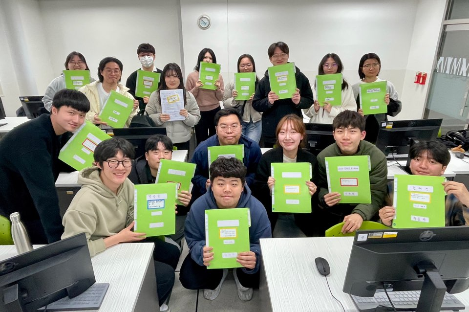

 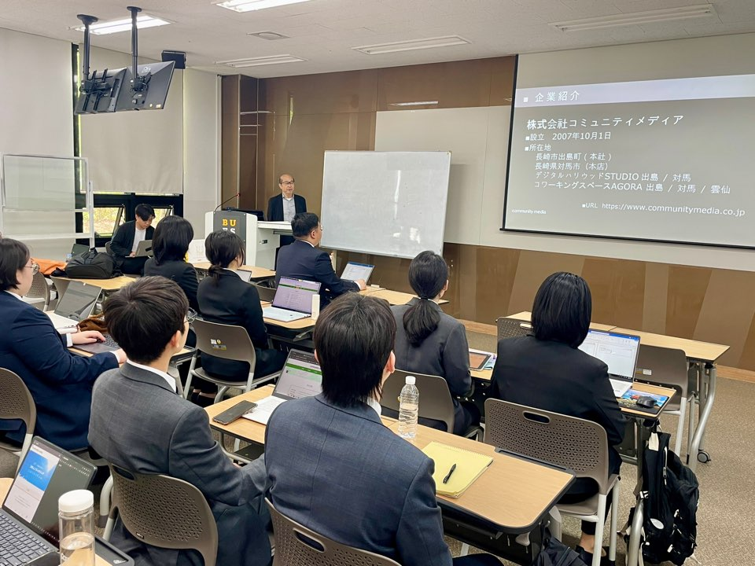
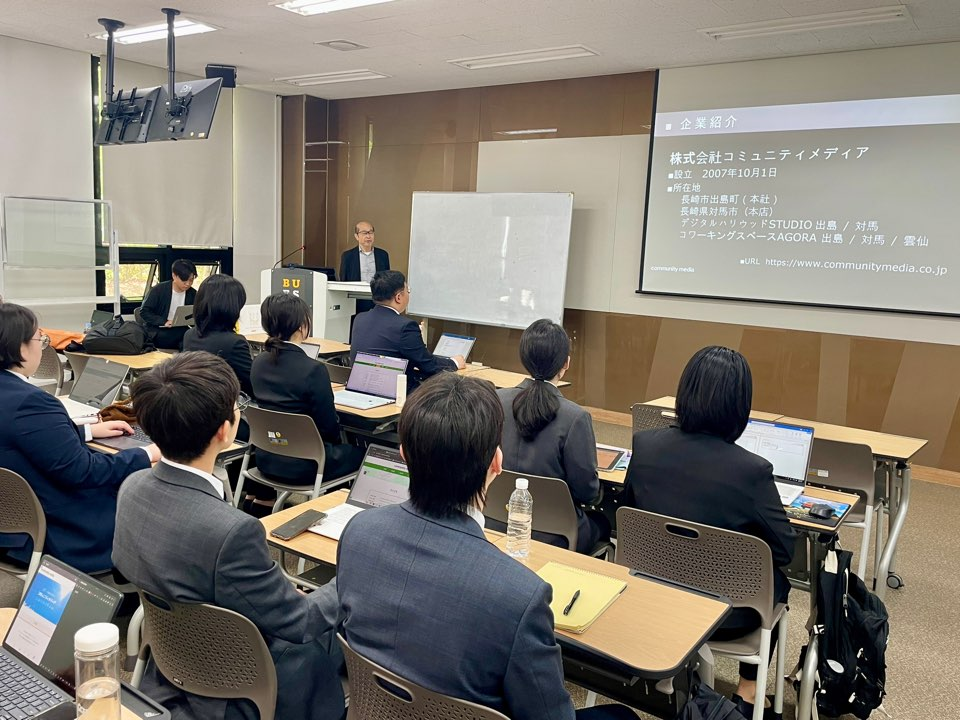

 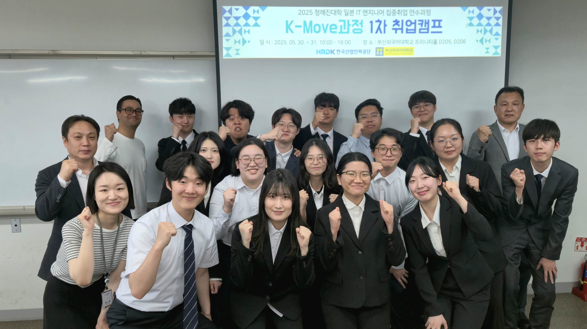
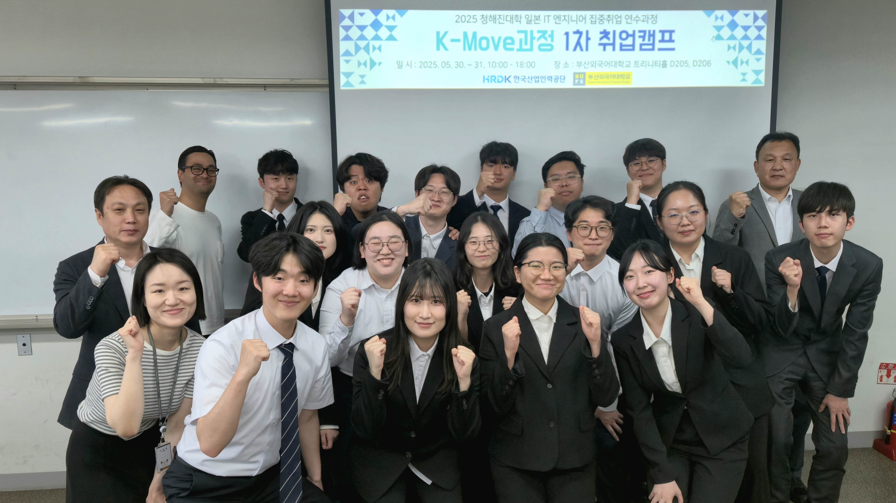
 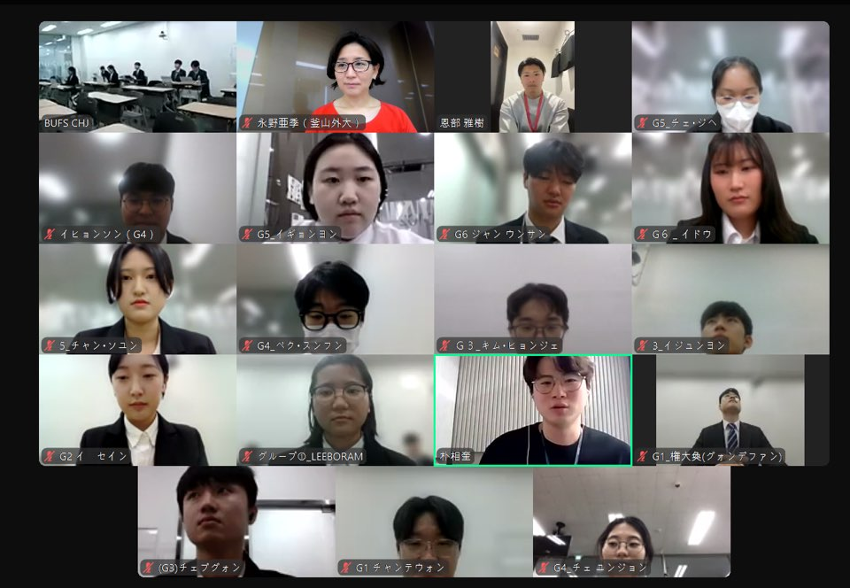
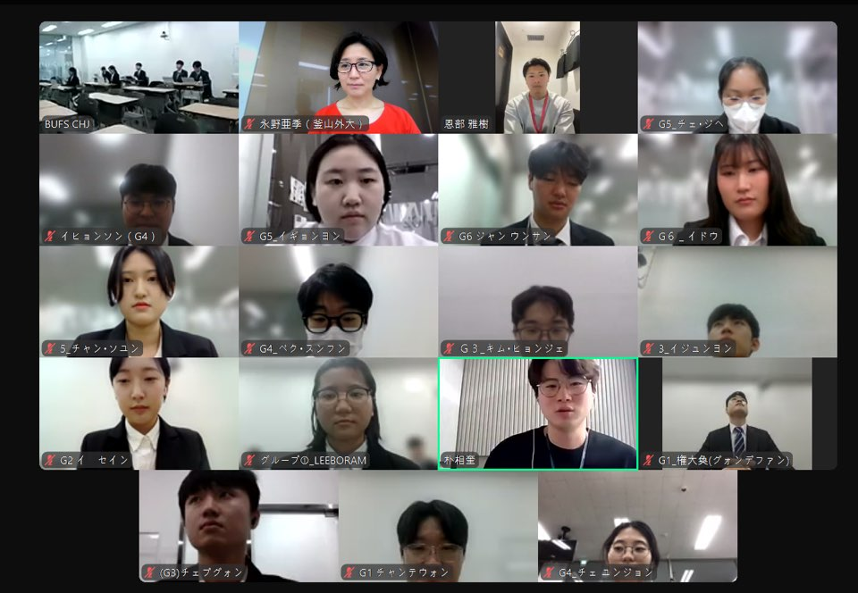
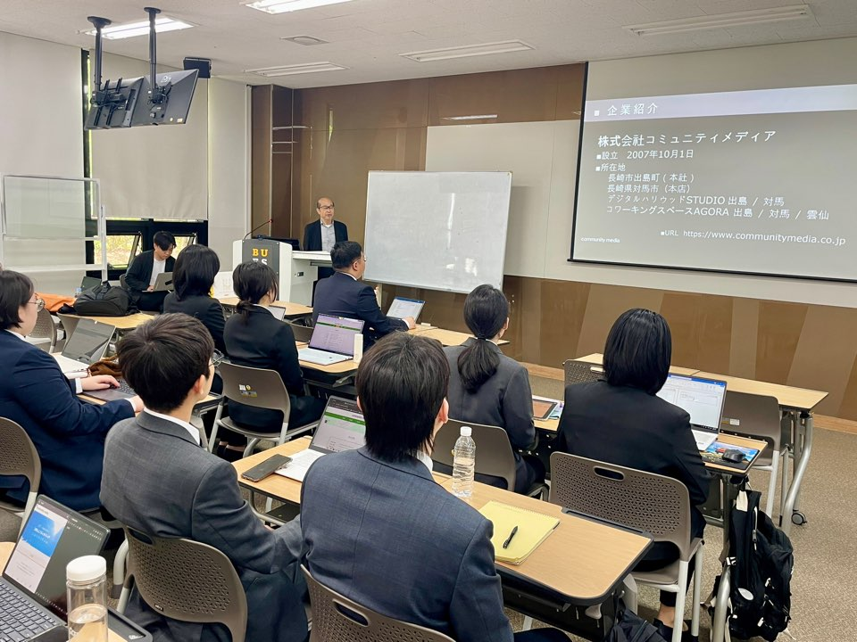
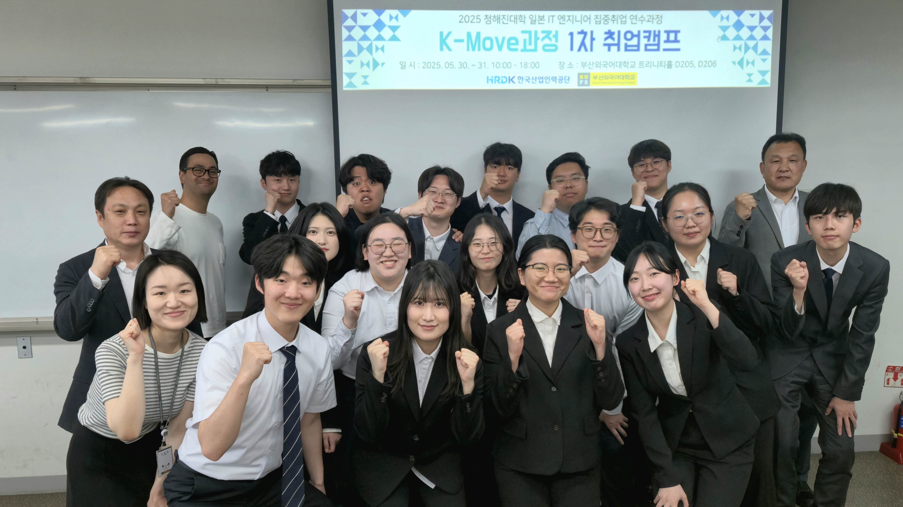
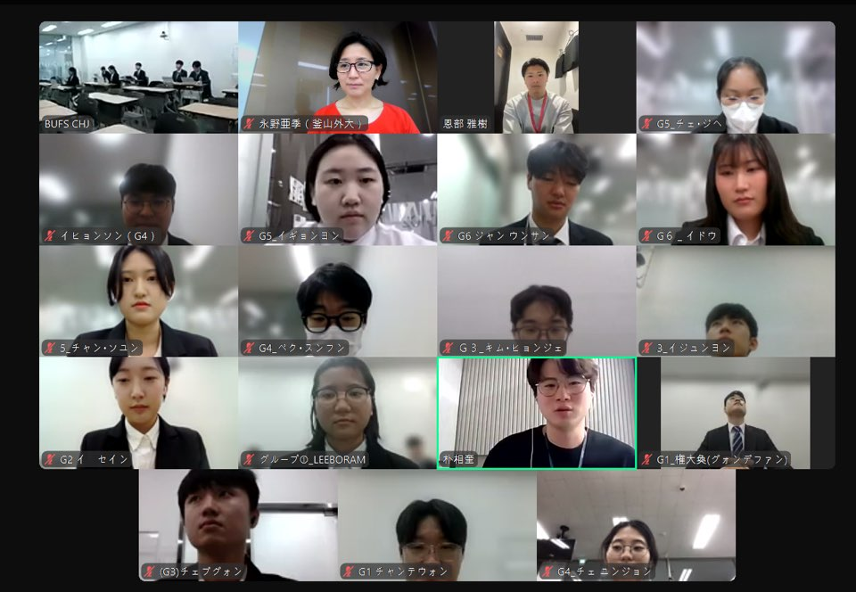
当プロジェクトの目的
日本語能力と基礎的プログラミング言語の理解を向上させるため。
また、インタビューを通じ、心の奥にいる不安を解決し、視野を広げるため。

 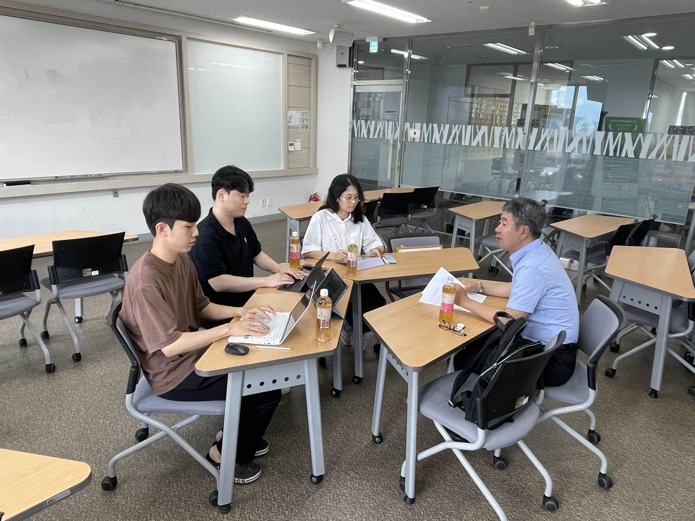
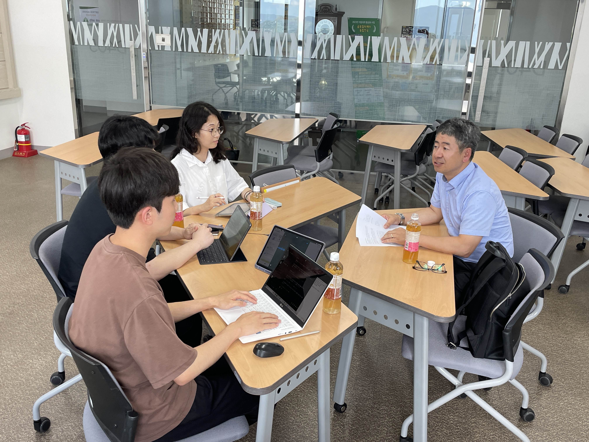
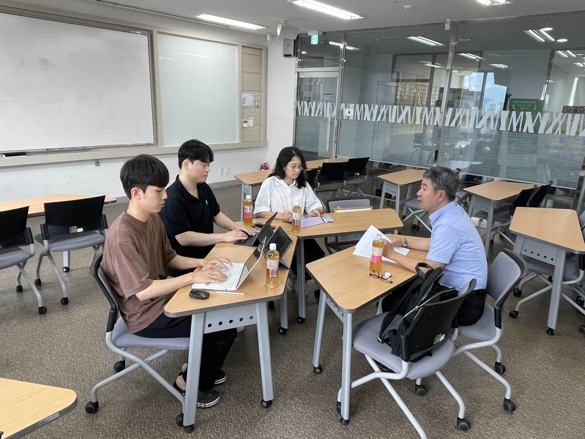
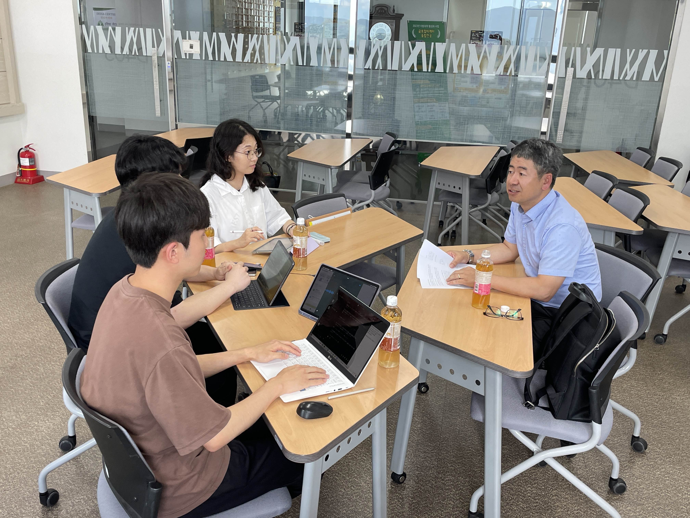


当WEBページの目的
金井さんのこれまでの経験からこれからリーダになる
私たち学生の不安を解除させる。